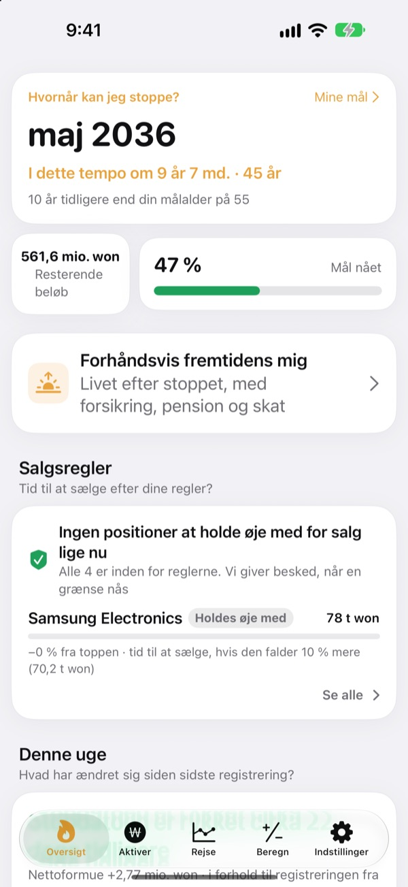
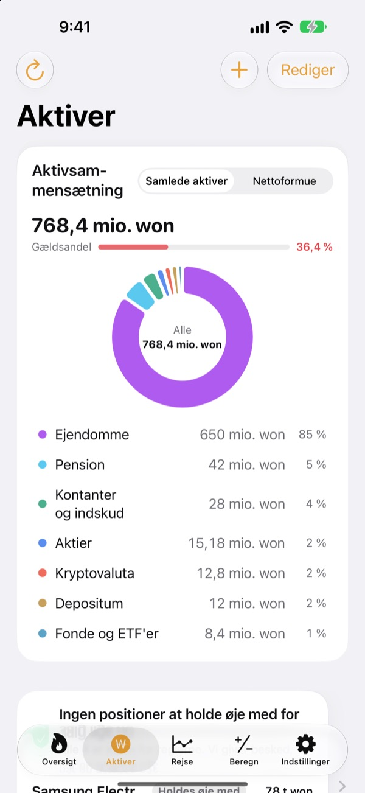
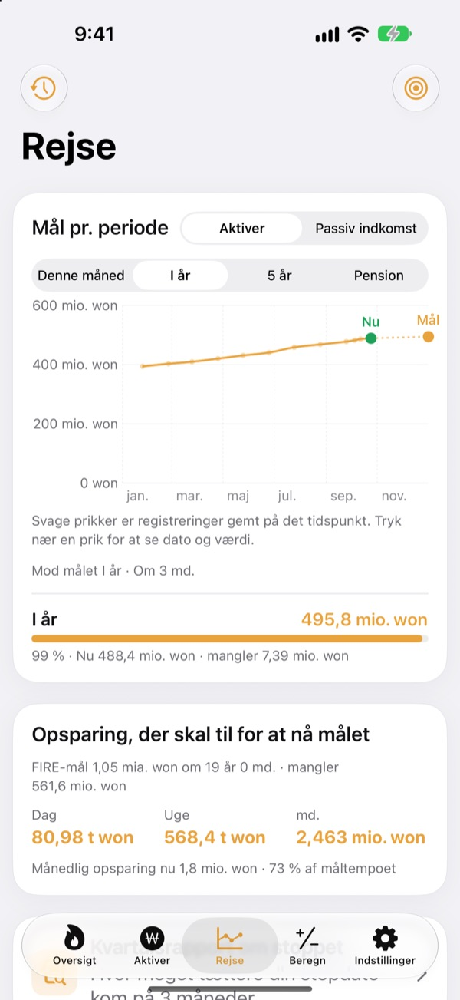
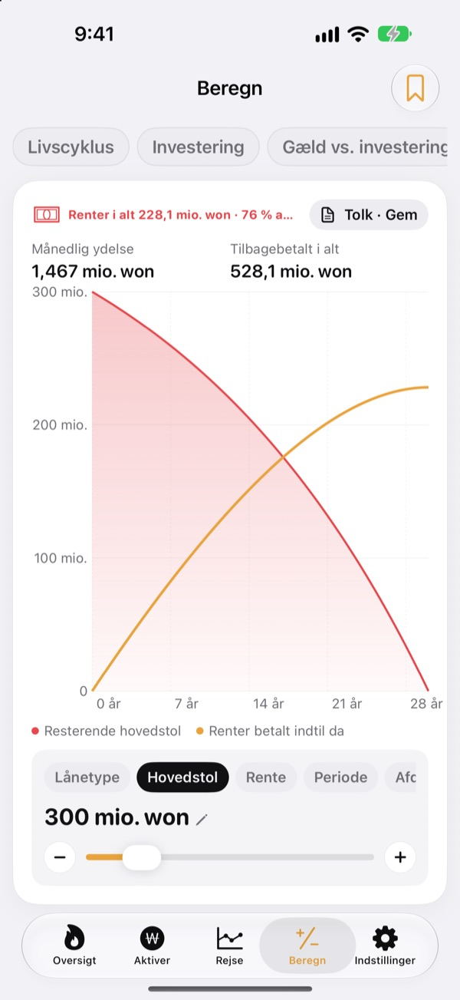

Hvornår kan du sige op?
Med tal, ikke mavefornemmelse.
Indtast, hvad du bruger, og hvad du har sparet op, så får du den måned, hvor du kan gå. Hver gang din formue ændrer sig, ser du, om datoen er rykket tættere på eller længere væk.
Ingen konto nødvendig. Dine data bliver på din enhed.

Find din stopdato
Træk i skyderne. Det er den samme beregning, som appen laver på første skærm.
Regner du stadig i hovedet på, om du kan sige op nu?
Når bankkonto, depot, pension og depositum ligger hver sit sted, bliver selv det samlede beløb uklart, og stopdatoen forbliver et gæt. Toesagak samler alt på én skærm og regner hele tiden måneden, hvor du kan stoppe, ud fra det samlede beløb.
Hele din formue på én skærm
Ejendom, aktier, fonde og ETF'er, pension, kontanter og indskud, depositummer, krypto og lån, samlet efter type med samlet formue, nettoformue og gældsandel.
Kurser på aktier og krypto hentes, så værdierne er opdaterede, og et skærmbillede fra din investeringsapp henter beholdninger og værdier ind på én gang.

Hvor meget om dagen til målet
Se mål for denne måned, dette år, fem år og pensionen sammen med dine tidligere registreringer i ét diagram. Appen fortæller også, hvor meget du skal spare op pr. dag, uge eller måned for at holde kursen.
Når din formue ændrer sig, gemmes ugens registrering automatisk, så din historik bygger sig selv op.

Regn på det før de store beslutninger
Beregnere til formue gennem livet, investering, afbetaling af gæld kontra investering, lån, opsparing og indskud, lønnens købekraft og penge omregnet til timer. Træk i en værdi, og diagrammet tegnes om, mens den tidligere kurve bliver stående som en stiplet linje til sammenligning.
Navngiv og gem de opsætninger, du vender tilbage til.

Tre trin til at komme i gang
- 1
Indtast forbrug og alder
Omtrentlige tal er fine. Din stopdato vises med det samme.
- 2
Tilføj dine aktiver
Jo mere du deler dem op, jo skarpere bliver datoen.
- 3
Kig forbi en gang imellem
Ugentlige registreringer bygger sig selv op, og appen kan minde dig om det den 1. i hver måned.
Sådan regner appen
- Mål
- Et års forbrug efter stop ÷ sikker udtrækningsrate (ved 4 % svarer det til 25 års forbrug)
- Stopdato
- Den måned, hvor din nettoformue plus det, du sparer op hver måned, forrentet med det forventede afkast, når målet
- Samlet formue
- Alt, hvad du ejer, lagt sammen
- Nettoformue
- Samlet formue minus gæld som fx lån
- Fremdrift
- Nettoformue ÷ mål. Du kan også følge den ud fra passiv indkomst
- Det kan du justere
- Månedligt forbrug, udtrækningsrate fra 2 til 6 %, forventet afkast fra 0 til 12 %, den alder, du gerne vil stoppe som
Alle resultater er vejledende beregninger ud fra dine indtastninger og er ikke investeringsrådgivning.
Spørgsmål
Hvor bliver mine data gemt?
Kun på din enhed. Der er ingen tilmelding, og intet sendes til udvikleren. Slå iCloud-synkronisering til under Indstillinger for at se de samme data på iPhone og iPad via din egen iCloud-konto.
Kurserne opdateres ikke.
Amerikanske og koreanske aktier, krypto og valutakurser virker uden opsætning. Tjek din internetforbindelse, og at tickeren eller koden er korrekt. Lejlighedspriser bruger offentlige koreanske ejendomsdata og kræver en servicenøgle, som du indtaster under Indstillinger.
Hvad er forskellen på samlet formue og nettoformue?
Samlet formue er alt, hvad du ejer, lagt sammen. Nettoformue er det beløb minus gæld som fx lån. Din stopdato beregnes ud fra nettoformuen.
Hvordan flytter jeg mine data til en ny enhed?
Brug Eksportér under Indstillinger til at lave en backupfil, gem den i Filer, på iCloud Drive eller i en mail, og gendan den på den nye enhed. Backupfiler indeholder aldrig API-nøgler. Appen gemmer også automatisk dine 20 seneste backups på enheden.
Hvordan virker salgsalarmer?
Angiv for hver beholdning, hvor meget den må falde fra toppen, eller en målkurs. Når kursen krydser den grænse, får du besked. På vej op holder appen sig i ro. Kurserne tjekkes, når du åbner appen, og når iOS tillader det i baggrunden (typisk med nogle timers mellemrum), så det er ikke overvågning i realtid.
Kan jeg holde mine tal for mig selv?
Slå Applås til under Indstillinger for at åbne appen med Face ID eller din adgangskode. Når låsen er slået til, viser den månedlige påmindelse heller ingen tal.
Kan jeg se mig omkring først?
Slå Demodata til under Indstillinger for at udforske alle skærme med en fiktiv persons formue. Slå det fra, så er dine egne data straks tilbage. Demodata er ikke tilgængelige, mens iCloud-synkronisering er slået til.
Hvordan sletter jeg alle mine data?
Når du sletter appen, fjernes alle data, der er gemt på enheden. Vil du beholde en kopi, så eksportér en backupfil under Indstillinger først.
Kan jeg investere ud fra disse tal?
Toesagaks resultater er vejledende beregninger ud fra dine indtastninger og et antaget afkast. De er ikke investeringsrådgivning, og det faktiske udfald afhænger af markedet og din situation.
Fejl, idéer eller spørgsmål? Skriv til leeo@kakao.com.